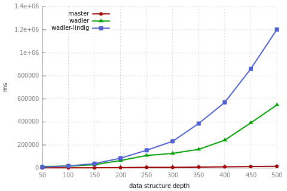
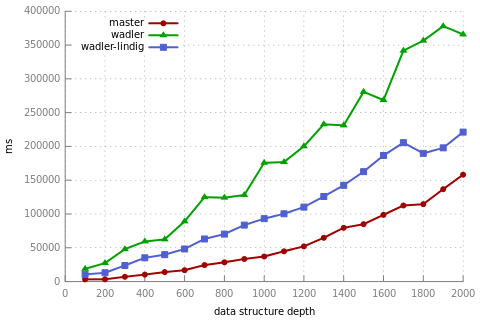
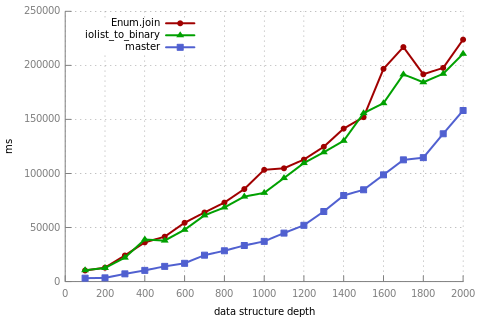
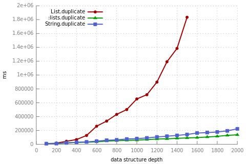

Today was over the first week of development of Summer of Code, and I worked mostly getting pretty-printing on Elixir. There was already a pull request implementing the algorithm proposed by Wadler (2003), but some performance issues still needed to be taken care of before merging it to upstream.
After reading the Lindig (2000) paper on the exponential behaviour
of the Wadler pretty printer on strict languages, I figured it could be the main issue, as the original implementation relies on Haskell's lazy evaluation.
I adapted the wadler.ex module from the pull request to follow the OCaml implementation proposed by Lindig.
As those tweaks didn't bring any performance gains, I moved on profiling the code.

Profiling showed that the exponential behaviour on the code arouse from the usage of the string concatenation operator in Elixir,
which has performance linear on length of the left-hand string. Therefore, I patched both pretty printing implementations (Wadler's and Lindig's)
to build lists of strings and make a one single List.join call at the end of the process. Those changes made the pretty printer show the expected
linear behaviour, and the strict implementation showed better performance than the one original lazy one.

Some optimizations followed: @devinus pointed out that using iolist_to_binary would bring even more performance gains over List.join,
and that using List.duplicate over String.duplicate to generate indent strings would also make the pretty printer faster.
I benchmarked the suggestions, and indeed the version using iolist_to_binary got better results.

However, a strange fact came up measuring List.duplicate vs String.duplicate: the usage List.duplicate brought back the exponential
performance to the function. Profiling showed that the List.duplicate version ended up making a massive amount of :lists.duplicate/3 calls;
to check that, I changed the List.duplicate call to an equivalent :lists.duplicate/2 call, and the number of :lists.duplicate/3 got back to normal!
@josevalim pointed that we should keep the :lists.duplicate/2 version of the code and further investigate the behaviour or List.duplicate afterwards.

The regression tests for the new implmentation were getting stuck on some Mix tests, which were caused by inspect calls relying on unformatted string results.
I've added the pretty: false option to all the Kernel.inspect calls on Mix, but the tests still failed. After that, I've verified that the pretty: false
option had to be reimplemented, which resulted on adding a corner case to the Wadler.fits? and Wadler.format methods to handle lines with "infinite width",
disabling any formatting done by the pretty printer.
There are still two pending issues to merge the pretty printer on upstream:
- Making the records used on wadler.ex private. I'm still wondering about the best way to handle the typespecs with defrecordp, which doesn't generate types.
- Documenting the Binary.Inspect.Util module, which contain functions that'll be made public, allowing custom pretty printers to be written.
The benchmark code I used is available here.